Sonowa 操作マニュアル
Sonowa（ソノワ）は、多言語会議の言語の壁をなくすリアルタイム音声翻訳・字幕システムです。参加者はそれぞれ「原声」か「翻訳音声」を選べ、聴いている音声と同じ言語の字幕が表示されます。
このマニュアルは、はじめて使う参加者と、システムを運用する管理者の両方に向けたものです。
1はじめに
Sonowa は「翻訳ツール」ではなく「言語の壁を意識させない会議体験」を目指しています。話す人はいつもどおり自分の言語で話し、聴く人はそれぞれ自分に合った形で受け取ります。
話す人
ふだんどおり自分の言語で話すだけ。特別な操作は必要ありません。
聴く人
「原声」か「翻訳音声」を自分で選べます。ほかの参加者には影響しません。
読む人
聴いている音声と同じ言語の字幕が出ます。音声と字幕がずれません。
「原声」と「翻訳音声」の違い
| 選択 | 聞こえる音声 | 表示される字幕 | 向いている場面 |
|---|---|---|---|
| 原声（既定） | 話した人の声そのまま | 話された言語のまま（原文） | 相手の言語がある程度わかる / 声色やニュアンスを大事にしたい |
| 翻訳音声 | 自分が選んだ言語に翻訳された合成音声 | 翻訳された言語 | 相手の言語がわからない / 内容の理解を優先したい |
この選択はあなたの画面だけに適用されます。同じ会議で、日本語話者は原声、英語話者は翻訳音声、というように混在できます。
2はじめる前に
| 項目 | 内容 |
|---|---|
| ブラウザ | Google Chrome または Microsoft Edge の最新版を推奨します。 |
| マイク | 発言する場合はマイクが必要です。ヘッドセットの利用を強く推奨します（スピーカーの音をマイクが拾うと、翻訳音声が二重に処理されます）。 |
| アクセス先 | 社内で案内された URL を開きます。標準構成では http://<サーバーのIP>:5273 です。 |
| マイクの許可 | 会議室に入ると、ブラウザがマイクの使用許可を求めます。「許可」を選んでください。 |
ブラウザは https:// または localhost 以外ではマイクを使えない仕様になっています。IP アドレス＋HTTP で検証するときは、各端末の Chrome / Edge で chrome://flags/#unsafely-treat-insecure-origin-as-secure に対象 URL を登録してブラウザを再起動してください。これは検証目的の一時的な回避策です。実運用では HTTPS 化してください。
3アカウント
3-1. アカウントを登録する
- 登録画面を開く
ログイン画面の「新規登録」リンクから移動します。
- 必要事項を入力する
メールアドレス、パスワード、表示名、母語（ネイティブ言語）を入力します。母語は翻訳先の初期値として使われるため、正しく選んでください。
- 登録を実行する
登録が完了すると、そのままログイン状態になります。
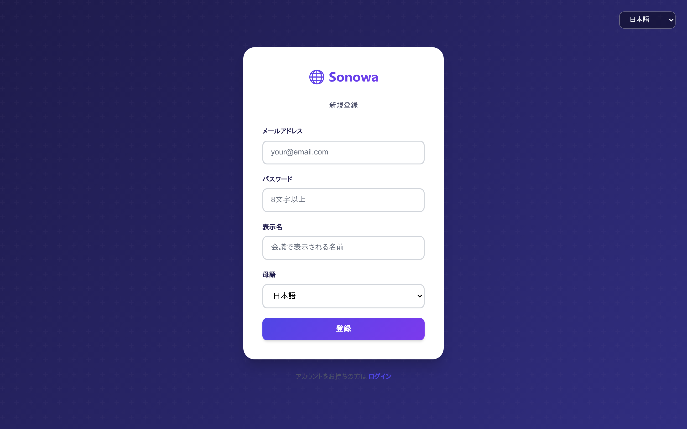
登録したアカウントは必ず「一般ユーザー」になります。管理者権限は既存の管理者が付与します。
3-2. ログインする
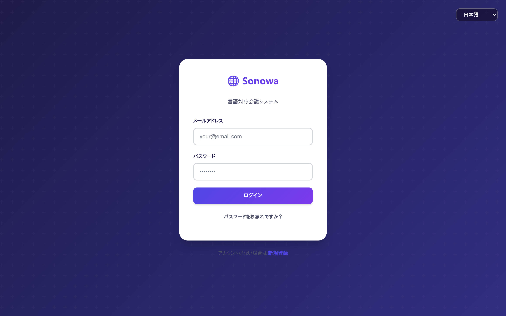
3-3. パスワードを忘れたとき
- 「パスワードをお忘れですか？」を開く
ログイン画面のリンクから再設定画面へ移動します。
- メールアドレスを入力する
登録済みのメールアドレス宛に、再設定用のリンクが送られます。
- 新しいパスワードを設定する
リンクを開くと再設定画面が表示されます。リンクには有効期限があります。
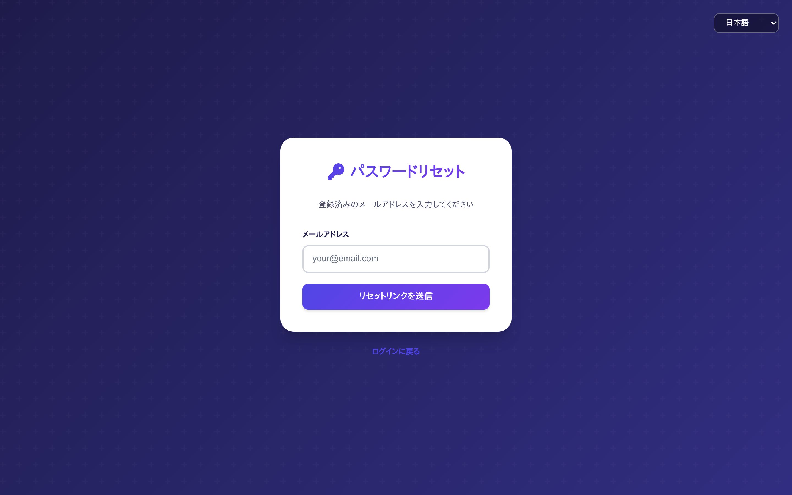
4会議に参加する
4-1. メニュー画面
ログインするとメニュー画面が表示されます。会議に参加するには「多言語会議」を選びます。
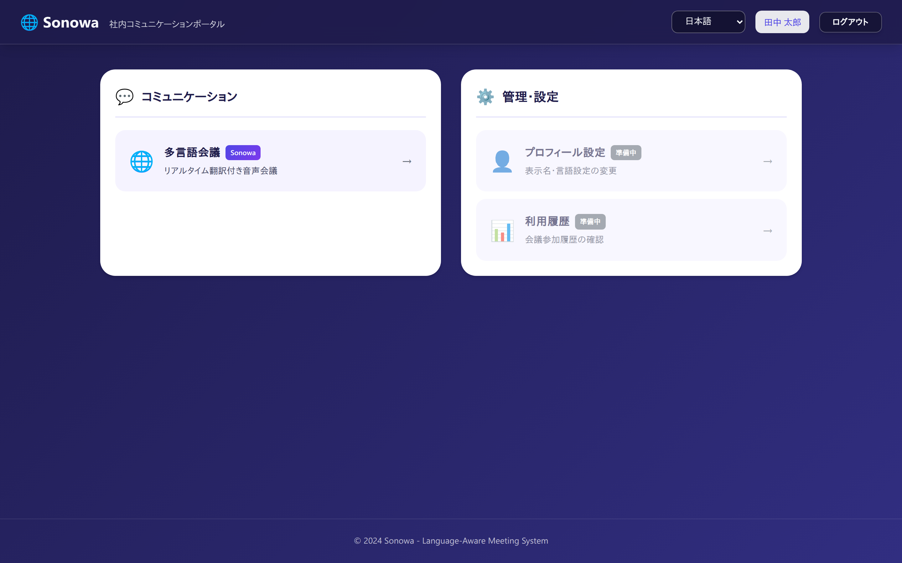
4-2. 会議室を選ぶ・作る
会議室の一覧が表示されます。参加したい会議室のカードを選ぶと入室します。新しく会議を開く場合は「＋ 新規会議室作成」を押します。
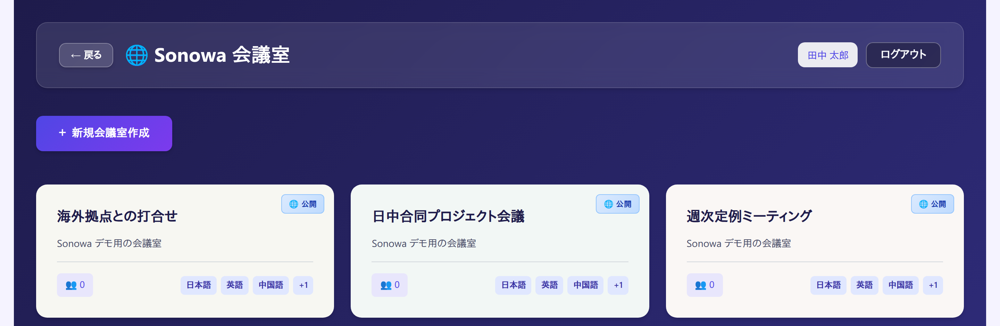
会議室を作成するときは、次の項目を設定します。
| 項目 | 説明 |
|---|---|
| 会議室名 / 会議概要 | 一覧に表示される名前と説明です。 |
| 許可言語 | その会議で使う言語を選びます。管理者が有効化した言語から選択できます。 |
| デフォルト音声モード | 参加者が入室したときの初期状態（原声 / 翻訳音声）です。 |
| モード切替を許可 | 参加者が自分で原声 / 翻訳音声を切り替えられるようにするかどうかです。 |
4-3. 会議室画面の見方
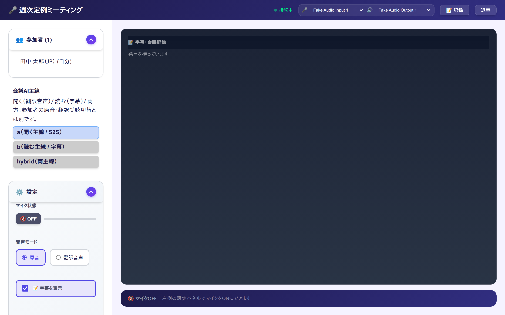
| 場所 | 表示・操作 |
|---|---|
| 上部バー | 会議室名、接続状態、マイク・スピーカーのデバイス選択、記録（会議記録を開く）、退室。 |
| 参加者 | いま入室している人と、その母語が表示されます。 |
| 会議AI主線 | 会議全体の動作方針。作成者・モデレーターのみ変更できます（4-5）。 |
| 設定 | あなた自身の受け取り方の設定（4-4）。 |
| 右側の黒い領域 | 字幕・会議記録。発言があるとリアルタイムで流れます。 |
| 下部バー | マイクの ON / OFF 状態。OFF のままでは発言が認識されません。 |
上部バーの丸印が緑色で「接続中」と表示されていれば正常です。灰色のままの場合は 7. 困ったとき を参照してください。
4-4. 音声と字幕を切り替える
左下の「設定」パネルが、あなた専用の受け取り方の設定です。
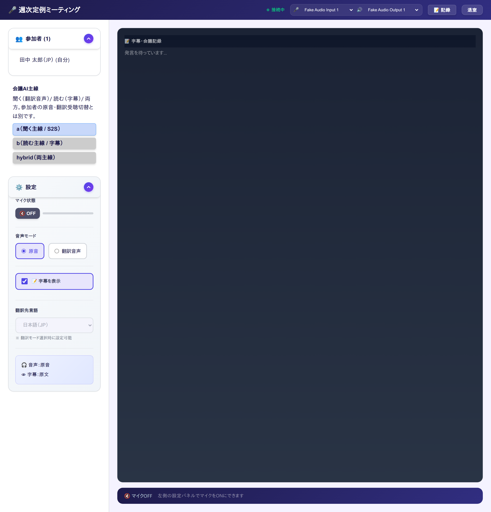
- マイク状態
発言するときは ON にします。OFF の間は、あなたの声は誰にも届かず、字幕にもなりません。
- 音声モード
原音＝話した人の声をそのまま聴きます。翻訳音声＝翻訳された合成音声を聴きます。
- 字幕を表示
チェックを外すと字幕が非表示になります。音声だけに集中したいときに使います。
- 翻訳先言語
翻訳音声を選んだときだけ設定できます。どの言語に翻訳して聴くかを指定します。
- 現在の状態
パネル下部に「音声: 原音 / 字幕: 原文」のように、いまの状態がまとめて表示されます。
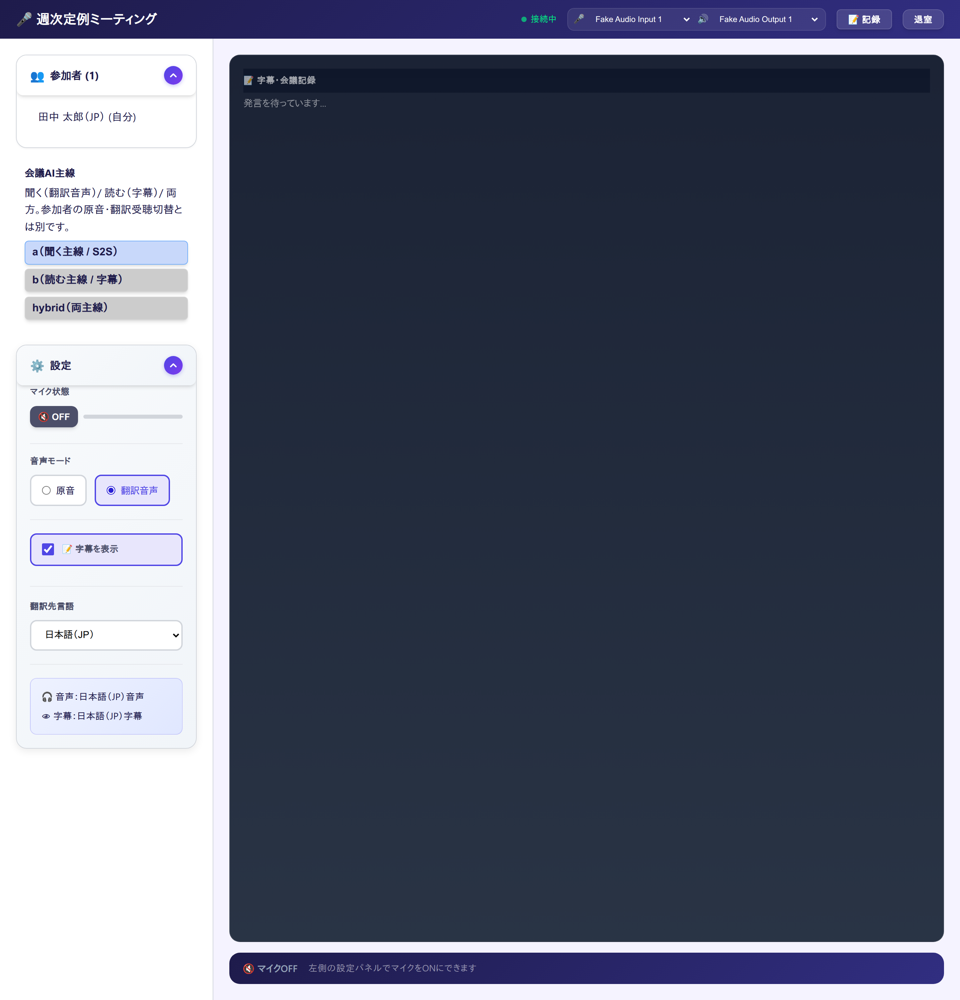
翻訳音声は、発言を認識してから翻訳・合成するため、原声より少し遅れて聞こえます。ネットワークや負荷の状況で遅延が大きくなった場合は、翻訳音声を自動的に止めて字幕だけを続ける動作に切り替わります。会議が止まらないようにするための仕組みです。
4-5. 会議AI主線（会議の作成者・モデレーター向け）
会議全体として「何を出すか」を決める設定です。参加者ごとの原声 / 翻訳音声の切替とは別のものです。
| 主線 | 意味 | 向いている会議 |
|---|---|---|
| a（聞く主線 / S2S） | 音声から音声へ直接翻訳します。もっとも遅延が小さい方式です。 | 会話のテンポを優先する打合せ、同時通訳的な使い方 |
| b（読む主線 / 字幕） | 音声認識 → 翻訳 → 字幕の順に処理します。用語集が効き、記録の精度が高くなります。 | 正式な記録を残す会議、業界用語が多い会議 |
| hybrid（両主線） | 上の両方を同時に動かします。 | 聴く人と読む人が混在する会議 |
5会議記録を見る
会議中の発言は自動的に記録されます。会議室の上部バーにある「記録」から開きます。
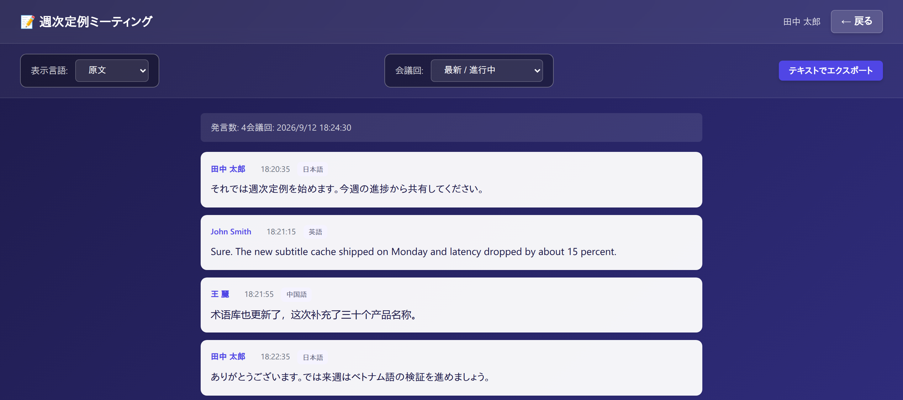
- 表示言語を選ぶ
「原文」を選ぶと話された言語のまま表示されます。特定の言語を選ぶと、その言語に翻訳された内容が表示され、原文が小さく併記されます。
- 会議回を選ぶ
同じ会議室で複数回ミーティングを行った場合、「会議回」で対象を切り替えられます。
- テキストでエクスポートする
右上のボタンで、表示中の内容をテキストとして書き出せます。議事録の下書きとして使えます。
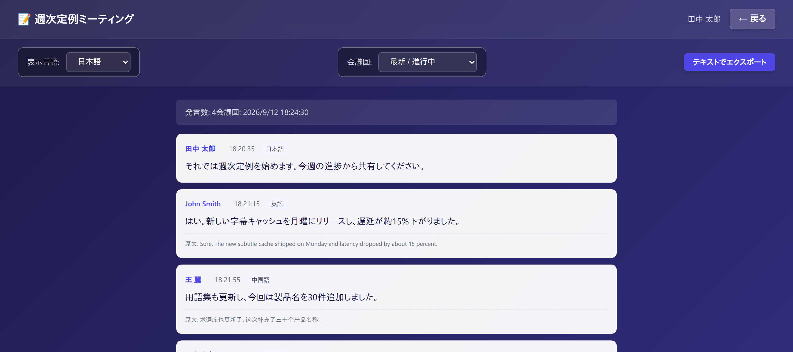
6管理者向け
以下の画面は 管理者（admin）ロール のみ利用できます。メニュー画面の「管理・設定」から移動します。
6-1. ユーザー管理・システム統計
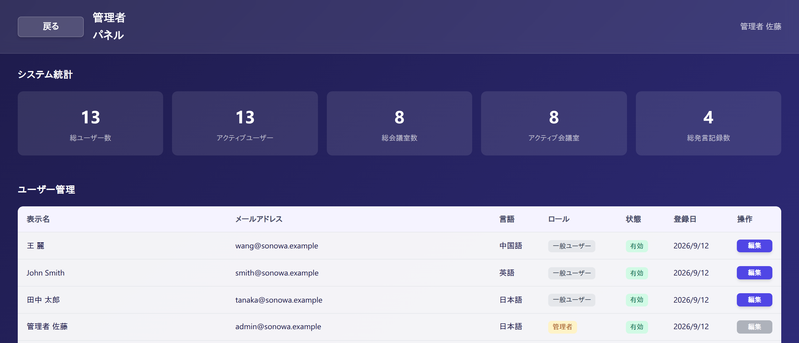
「編集」から、そのユーザーの表示名・母語・ロール・有効／無効を変更できます。退職者のアカウントは削除せず無効化することで、過去の会議記録の発言者名を保ったまま利用を停止できます。
admin＝全設定にアクセス可能。moderator＝会議の主線切替など進行の権限。user＝一般参加者。
6-2. 対応言語設定
システム全体で使う言語を選びます。ここで有効にした言語が、新しく作成される会議室で選択できるようになります。
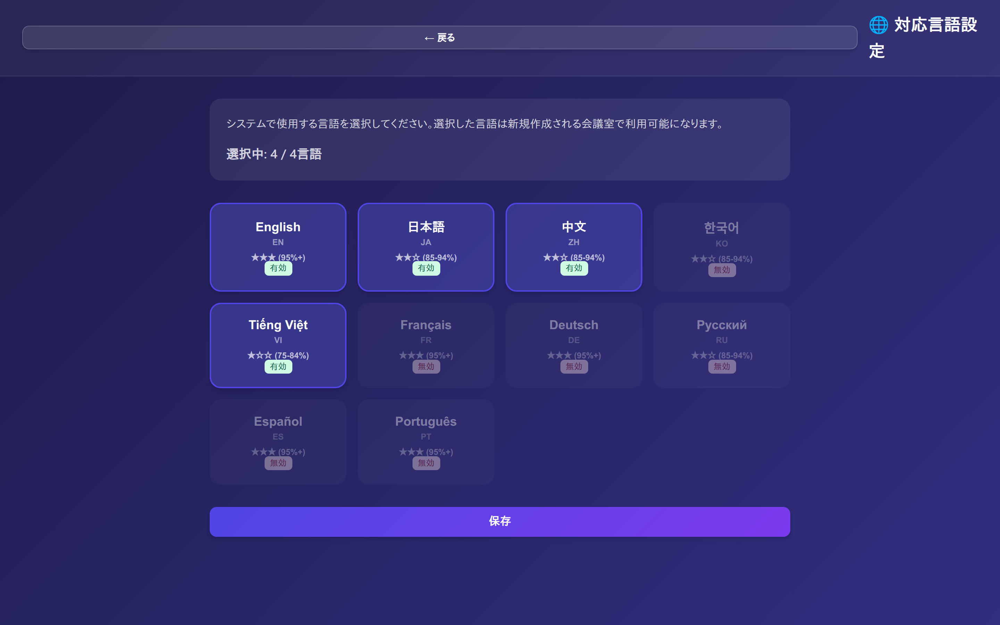
すでに作成済みの会議室の許可言語は、この設定を変えても自動では変わりません。
6-3. AIパイプライン設定
翻訳の処理方式を、サーバーを再デプロイせずに切り替えられます。API キーなどの秘密情報はこの画面からは変更できません。
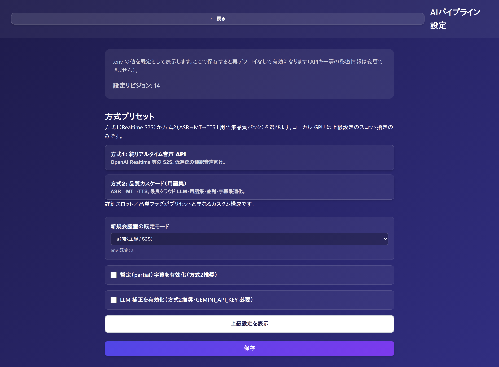
| プリセット | 処理のしかた | 選ぶ基準 |
|---|---|---|
| 方式1: 純リアルタイム音声 API | 音声から音声へ直接翻訳します（S2S）。途中の認識・翻訳・合成の切替設定は使いません。 | 低遅延の翻訳音声を最優先したいとき |
| 方式2: 品質カスケード（用語集） | 音声認識 → 翻訳 → 音声合成に分けて処理し、用語集・字幕キャッシュ・暫定字幕・LLM 補正を有効にします。 | 用語の正確さと記録品質を優先したいとき |
そのほか、この画面では次の項目を設定します。
- 新規会議室の既定モード — 新しく作られる会議室の主線（a / b / hybrid）の初期値。
- 暫定（partial）字幕を有効化 — 発言の途中から字幕を出し、最初の文字が出るまでの時間を短くします。方式2で推奨。
- LLM 補正を有効化 — 表記ゆれや文脈を整えます。方式2で推奨で、別途 API キーの設定が必要です。
- 上級設定 — 音声認識・翻訳・音声合成のそれぞれについて、使用するサービスを個別に指定します。ローカル GPU での実行もここで指定します。
保存するたびにリビジョン番号が上がります。変更が反映されたかどうかの確認に使えます。
6-4. A/B実験
複数の設定を並行して配信し、品質や遅延の指標を比較するための画面です。実験が設定されていない場合は、その旨のメッセージが表示されます。
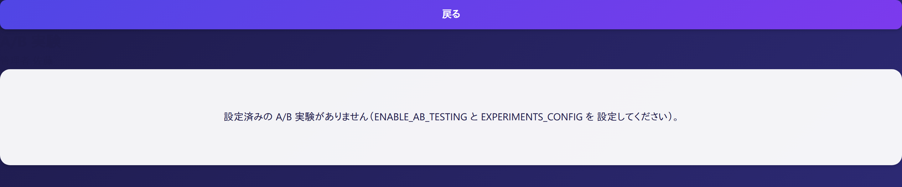
7困ったとき
自分の声が相手に届かない
- マイクが ON か確認する
設定パネルの「マイク状態」が OFF になっていないか確認します。
- ブラウザの許可を確認する
アドレスバーのカメラ・マイクのアイコンから、マイクが「許可」になっているか確認します。
- 入力デバイスを選び直す
上部バーのマイク選択から、実際に使っているマイクを選びます。ヘッドセットは接続してからブラウザを開き直すと確実です。
字幕が出ない
- 設定パネルの「字幕を表示」にチェックが入っているか確認します。
- 発言者のマイクが ON になっているか確認します。
- 会議AI主線が a（聞く主線） の場合、字幕は補助的な表示になります。字幕を重視する会議では b または hybrid を選んでください。
翻訳音声が聞こえない / 途中で止まった
遅延が大きくなると、Sonowa は翻訳音声を自動的に止めて字幕だけを続けます（意図された動作です）。しばらく待っても戻らない場合は、いったん退室して入り直してください。
ほかの PC から接続できない
- URL を確認する
全端末で、サーバーの LAN IP を使った同じ URL を開きます。
localhostでは他の端末から接続できません。 - 疎通を確認する
参加端末のブラウザで
http://<サーバーのIP>:8090/healthを開き、応答が返るか確認します。 - ファイアウォールを確認する
画面は開くのに音声が届かない場合、サーバー側のファイアウォールでメディア用のポートが閉じている可能性があります。管理者に確認してください。
パスワードを忘れた
3-3. パスワードを忘れたときの手順で再設定します。メールが届かない場合は管理者に連絡してください。
8用語集
| 用語 | 意味 |
|---|---|
| 原声 / 原音 | 話した人の声そのもの。翻訳されていない音声です。 |
| 翻訳音声 | 発言を翻訳して合成した音声です。 |
| 主線 | 会議全体として「聞く」「読む」のどちらを主に出すかという方針です。 |
| ASR（音声認識） | 話した音声を文字に起こす処理です。 |
| MT（機械翻訳） | 文字になった内容を別の言語に翻訳する処理です。 |
| TTS（音声合成） | 翻訳した文章を音声にする処理です。 |
| S2S（音声対音声） | 文字を経由せず、音声から直接翻訳音声を作る方式です。遅延が小さくなります。 |
| 用語集（Glossary） | 社内の製品名・人名などの訳し方を登録しておく仕組みです。翻訳の表記を統一します。 |
| 暫定（partial）字幕 | 発言が終わる前に、途中経過として表示される字幕です。あとから確定内容に置き換わります。 |